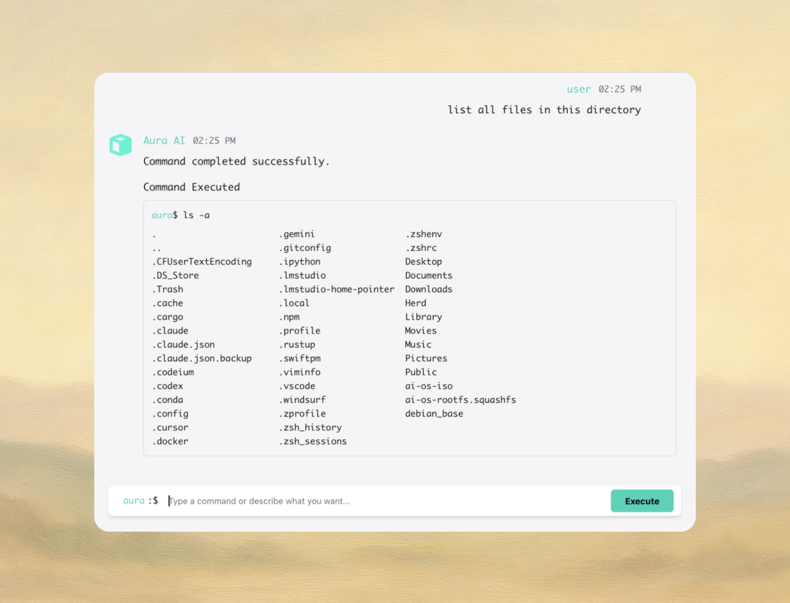
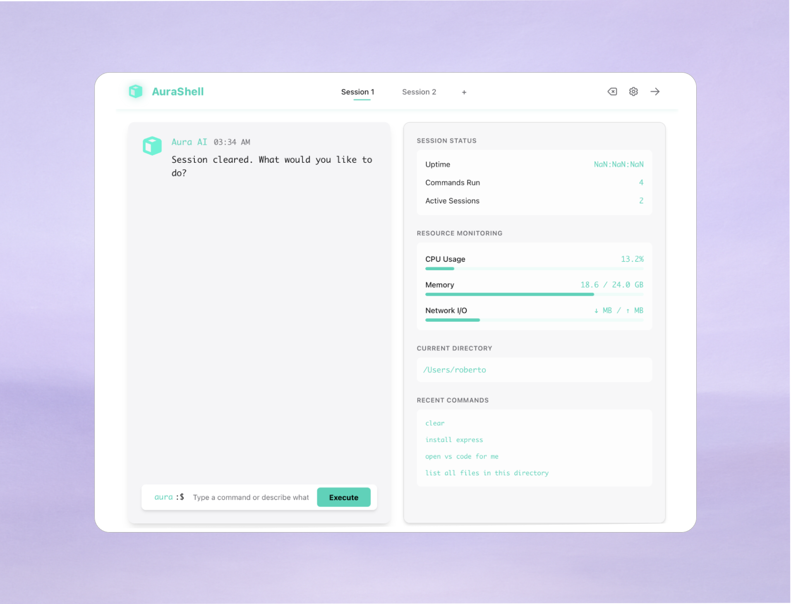

Your terminal speaks your language.
The AI-powered terminal that understands what you mean, not just what you type.
Powerful commands hidden behind cryptic syntax.
One wrong character, and everything breaks.
$ find . -type f -name "*.log" -mtime +30 -delete
Complex. Intimidating. Easy to mess up.
Simple. Clear. Safe.
AuraShell provides a beautiful and intuitive interface that makes working with the terminal a pleasure.

Transform plain English into executable shell commands in real-time with intelligent AI-powered translation.
Search the web directly from your terminal. Get instant answers and code snippets without leaving your workflow.

Manage multiple terminal sessions with tabs and real-time monitoring for all your projects.
AI-powered error analysis with intelligent fix suggestions. Get instant solutions when commands fail.
Powered by advanced AI that understands context and intent.
"show all hidden files"
ls -la
"find files containing 'error'"
grep -r "error" .
"how much disk space is left?"
df -h
Multi-level protection ensures you never accidentally destroy your system.
Every command is analyzed for potential risks. Dangerous operations require confirmation. Critical commands are flagged before execution. You're always in control.
Translate plain English into executable shell commands. No more memorizing complex flags and syntax.
AuraShell analyzes commands before execution, warning you of potentially dangerous operations to prevent accidental damage.
Easily search your command history and find what you need with a powerful, intuitive search interface.
Manage multiple terminal sessions in one window with elegant tabs and seamless switching between projects.
A stunning dark interface optimized for long coding sessions, with carefully chosen colors that reduce eye strain.
Track CPU, memory, and network usage in real-time with an integrated monitoring panel for system insights.
Download AuraShell today and experience a faster, safer, and more intuitive command line.